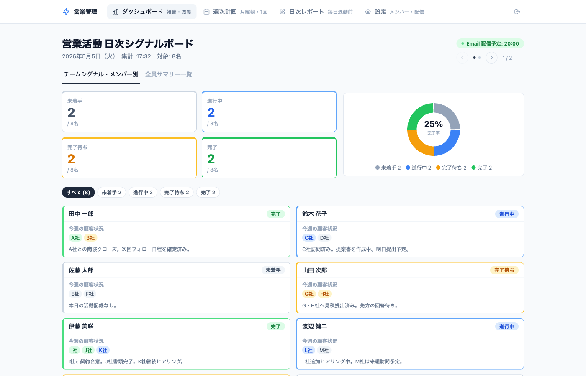
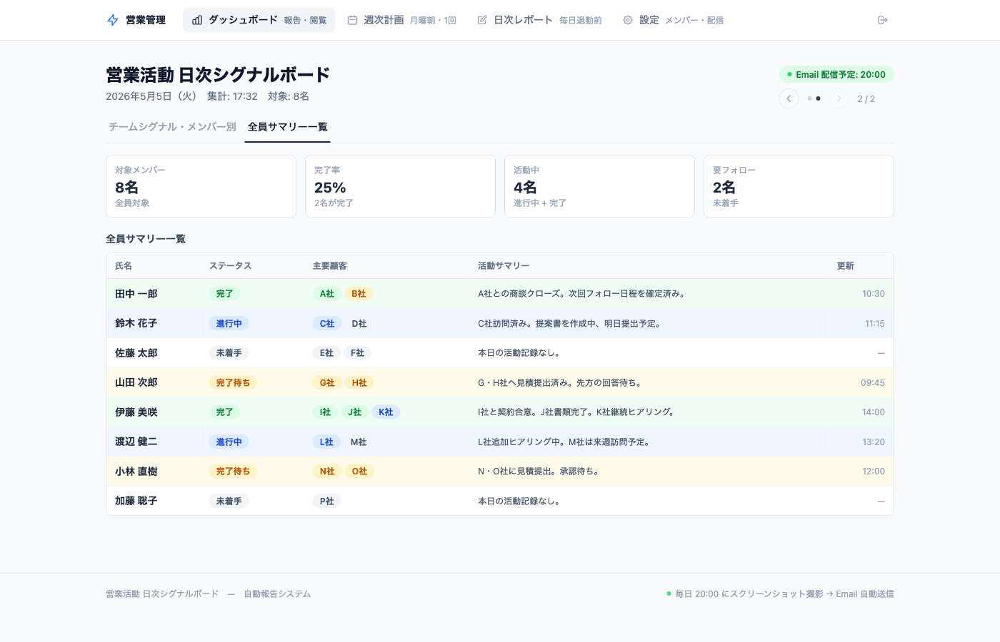
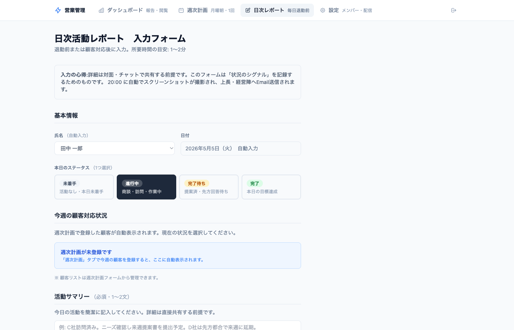

きっかけ・設計の工夫・苦労したこと
やってみて気づいたこと
なぜ作ったのか
解決したかった4つの課題
報告の習慣化
メンバーが日々の活動を一定の
フォーマットで記録する習慣を
チームに根付かせたかった
フィードバック漏れをなくす
報告内容を記録しておき
リーダーから全員に
確実にフィードバックを届けたい
TODOのフォロー
週次・日次のTODOをリーダーが示し
進捗を見える化して
メンバーを支援したい
毎日の状況を自動確認
集計・報告の手間なく
全員の状況をリアルタイムで
毎日確認できるようにしたい
ツール紹介① ダッシュボード
管理者・メンバー全員が確認できるリアルタイム画面

🔢 4色チームシグナル
未着手・進行中・完了待ち・完了を色別にカウント。全体の状況が一瞬で把握できる
👤 メンバーカード
各自の顧客状況と今日の活動サマリーが一覧表示。クリックでフィルター可能
🔄 リアルタイム反映
メンバーが送信ボタンを押した瞬間、ダッシュボードに反映される
📧 毎日20:00 自動送信
この画面が自動でスクリーンショット撮影され、指定アドレスへメール送信される
📧 毎日20:00 にメールで届くレポート
GitHub Actions が自動でスクリーンショットを撮影し、指定アドレスへ添付送信する
差出人
hirohisa.tanabe@gmail.com
件名
【営業活動】日次シグナルボード
2026年5月5日（火）
本文
お疲れ様です。
本日の営業活動レポートをお送りします。
📎 添付ファイル
⚙️ 完全自動化
GitHub Actions が
月〜金 20:00 に自動実行
メンバーの操作は不要
添付① チームシグナル・メンバー別
添付② 全員サマリー一覧

ツール紹介② 日次レポートフォーム
メンバーが毎日退勤前に入力 ／ 所要時間: 1〜2分

🟢 ステータスをワンクリック
4択から選ぶだけ。入力の手間を極限まで削減した
🏢 顧客リスト自動表示
週次計画に登録した顧客が自動で並ぶ。入力する必要なし
📝 サマリーは1〜2文でOK
詳細は口頭で共有する前提。ツールは「シグナル」を記録する場所
💾 下書き保存あり
途中保存して後から送信可能。修正は当日20:00まで
4ステータスをどう決めたか
「毎日確実に完了させる文化」を仕組みで支える
未着手
本日まだ活動なし
周囲が認識できる
→ 声がけ・フォローの
トリガーになる
✅ 放置を防ぐ仕組み
進行中
商談・訪問・作業中
動いていることが
可視化される
→ 邪魔しない
タイミングが分かる
✅ 自律性を尊重
完了待ち
提案済・先方回答待ち
やり残しが明確になる
→ 翌日以降のTODOに
自動で引き継がれる
✅ 個人の備忘録にもなる
完了
本日の目標達成
完了までこだわる
文化をつくる
→ 達成感の可視化で
モチベーション維持
✅ 成果を認める文化
💡 ポイント: 「完了しなかったこと」を可視化することで、翌日以降のフォローが自然に発生する仕組みになっている
一番の課題と解決方法
何をどう報告させるか — 設計で最も悩んだ部分
😰 課題
「何を・どう・どこまで報告させるか」を
できるだけシンプルに設計すること
• 情報が多すぎると入力が面倒になり
続かなくなる
• 少なすぎると状況が伝わらない
• 毎日続けてもらうには
入力の負担を最小限にする必要がある
→ 誰が何を報告すべきか、
フォーマットを何度も考え直した
✅ 解決方法
AIに何度もサンプルを作成してもらい、
実際に画面を見ながら修正を繰り返した
具体的な進め方:
① まず「こんなツールが欲しい」とざっくり伝えて
AIにサンプルを作成してもらう
② 画面キャプチャを撮りながら
「ここをこう変えて」と修正依頼
③ ①②を繰り返して完成形に近づけた
AIを使ってみて気づいたこと
実際に体験して分かった、AIとの上手な付き合い方
最初の指示でかなりの精度
「こんなツールが欲しい」と伝えるだけで、イメージに近いものがすぐに作られた。最初の出力クオリティが想像以上に高かった。
画面キャプチャ＋修正依頼が最強
「この画面のここをこう変えて」と画像を添付して依頼すると、AIが意図を正確に読み取って修正してくれた。
繰り返しが完成度を上げる
一度で完璧にしようとするより、「見てみて直す」を繰り返す方がよいものができた。会話型AIならではの強み。
✨ AIは「作ってくれる人」ではなく「一緒に考えてくれる相棒」
どんなツールが必要かを自分で考え、AIに伝え、見て判断する。専門知識ゼロでも、アイデアがあればツールが作れる時代になった。
MESSAGE TO THE TEAM
💬
使いづらい点を教えてください
入力項目・画面の見方・操作方法など、気になることは何でも
🔧
改良アイデアを歓迎します
「こんな機能があれば」「この項目は不要」など、現場の声が一番大切
🌱
チームに合わせて進化させたい
皆さんのフィードバックをもとに、今後もどんどん改善していきます
🌐 ツール本体: https://hirohisatanabegit.github.io/My-First-Project/